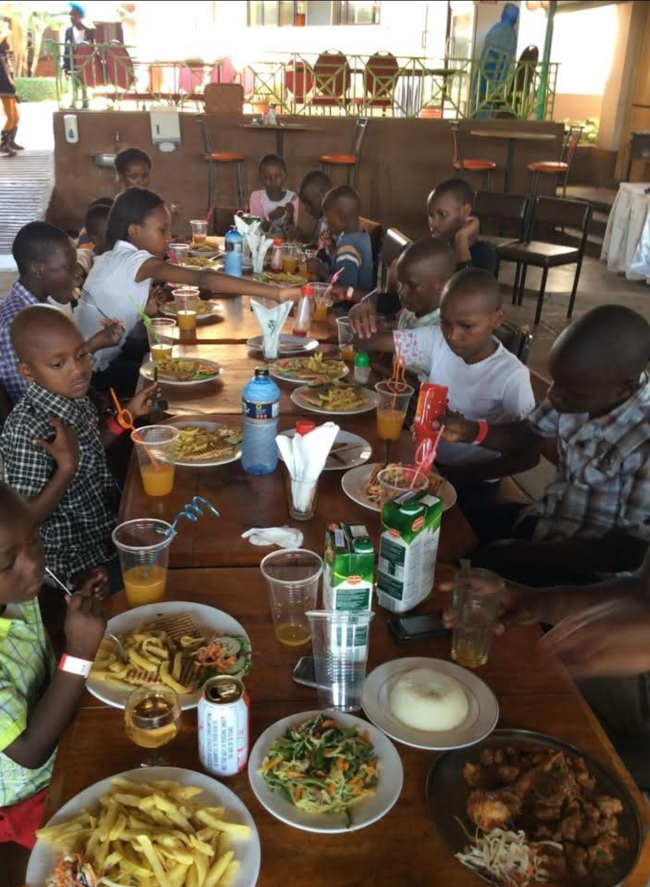
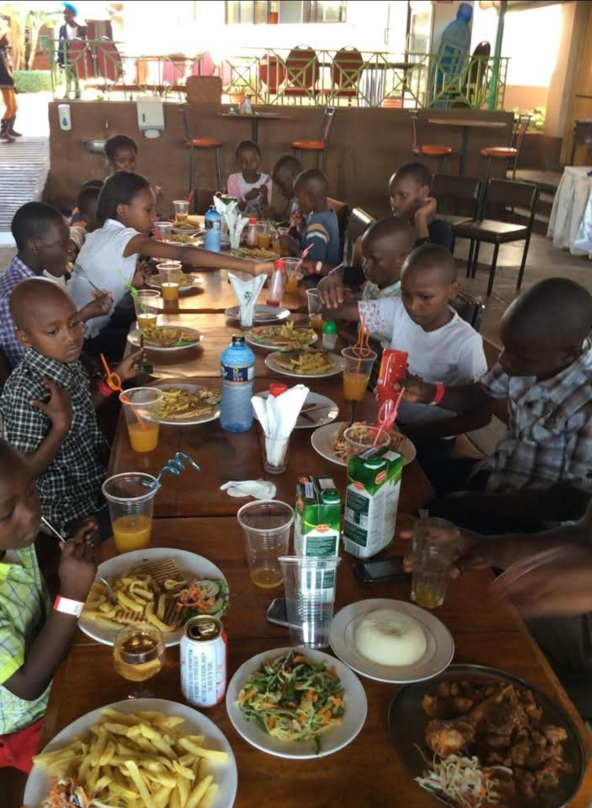
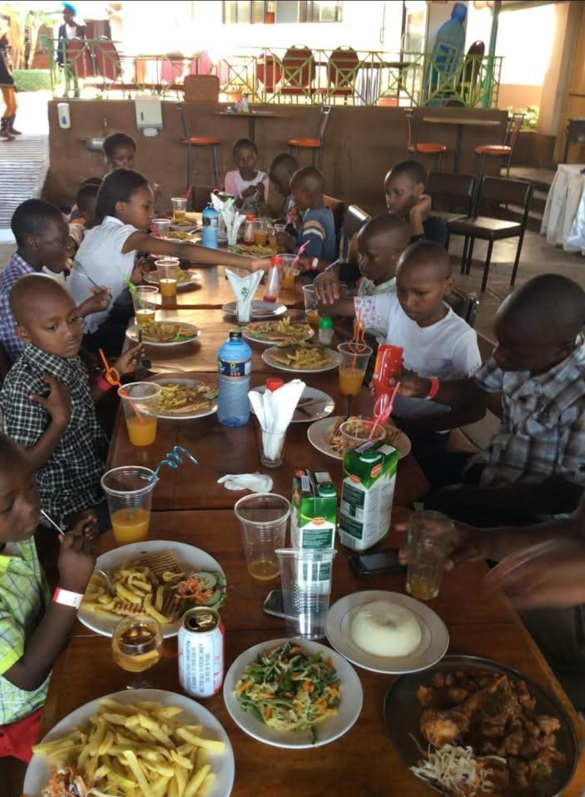

From Struggle to Confidence
Once facing extreme hardship, this child found renewed hope through education and support. Today, they stand with confidence and a bright future ahead.

Once facing extreme hardship, this child found renewed hope through education and support. Today, they stand with confidence and a bright future ahead.


Through consistent care and mentorship, this transformation showcases how compassion can restore dignity and self-worth in a child’s life.
Overcoming trauma is never easy, but with encouragement and resources, this child now thrives in a safe, supportive environment.

Given access to education, this child’s journey proves how learning opens doors to opportunities that were once unimaginable.

A once broken spirit now shines with happiness, proof that every child deserves the chance to laugh, learn, and dream again.
With proper guidance and community support, this young life has been redirected towards hope, success, and endless possibilities.